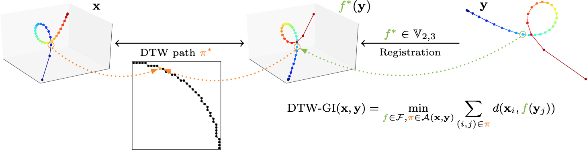

Note. This work was part of Titouan Vayer's PhD thesis. We were co-supervising Titouan together with Laetitia Chapel and Nicolas Courty.
In this work we address the problem of comparing time series while taking into account both feature space transformation and temporal variability. The proposed framework combines a latent global transformation of the feature space with the widely used Dynamic Time Warping (DTW). This work is available as preprint (Vayer et al., 2020).
Definition
Let $\mathbf{x} \in \mathrm{R}^{T_x \times p_x}$ and $\mathbf{y} \in \mathrm{R}^{T_y \times p_y}$ be two time series. In the following, we assume $p_x \geq p_y$ without loss of generality. In order to allow comparison between time series $\mathbf{x}$ and $\mathbf{y}$, we will optimize on a family of functions $\mathcal{F}$ that map $\mathbf{y}$ onto the feature space in which $\mathbf{x}$ lies. More formally, we define Dynamic Time Warping with Global Invariances (DTW-GI) as the solution of the following joint optimization problem:
\begin{equation} \text{DTW-GI}(\mathbf{x}, \mathbf{y}) = \min_{f \in \mathcal{F}, \pi \in \mathcal{A}(\mathbf{x}, \mathbf{y})} \sum_{(i, j) \in \pi} d(\mathbf{x}_i, f(\mathbf{y}_j)), \label{eq:dtwgi} \end{equation}where $\mathcal{F}$ is a family of functions from $\mathrm{R}^{p_y}$ to $\mathrm{R}^{p_x}$.
This similarity measure estimates both temporal alignment and feature space transformation between time series simultaneously, allowing the alignment of time series when the similarity should be defined up to a global transformation. Time series do not have to lie in the same ambient space, as presented in the following Figure:

Optimization
Optimization of the quantity in Equation \eqref{eq:dtwgi} can be performed via Block Coordinate Descent. In a nutshell, optimization alternates between the following two steps:
- for a fixed $f$, determine the optimal alignment path $\pi$ using the DTW algorithm;
- for a fixed path $\pi$, the optimal map $f$ (when $\mathcal{F}$ is the Stiefel manifold) is obtained through Singular Value Decomposition.
Interestingly, this optimization strategy where we alternate between time series alignment, i.e. time correspondences between both time series, and feature space transform optimization can be seen as a variant of the Iterative Closest Point (ICP) method in image registration (Chen & Medioni, 1992), in which nearest neighbors are replaced by matches resulting from DTW alignment.
The resulting algorithm is detailed in the following code:
import numpy
def path2mat(path):
max0, max1 = path[-1]
w_pi = numpy.zeros((max0 + 1, max1 + 1))
for i, j in path:
w_pi[i, j] = 1.
return w_pi
import scipy
from tslearn.utils import to_time_series
from tslearn.metrics import dtw_path
def dtw_gi(ts0, ts1, init_p=None, max_iter=20, verbose=False, use_bias=False):
r"""Compute Dynamic Time Warping with Global Invariance (DTW-GI) similarity
measure between (possibly multidimensional) time series and return it.
Parameters
----------
ts0: array of shape (sz0, d0)
A time series.
ts1: array of shape (sz1, d1)
A time series.
init_p : array of shape (d0, d1) (default: None)
Initial p matrix for the Stiefel linear map. If None, identity matrix
is used.
max_iter : int (default: 20)
Number of iterations for the iterative optimization algorithm.
verbose: boolean (default: True)
Whether information should be printed during optimization
use_bias: boolean (default: False)
If True, the feature space map is affine, otherwise it is linear.
Returns
-------
w_pi
Warping matrix (binary matrix of shape (sz0, sz1))
p
Stiefel matrix
cost
Similarity score
"""
ts0_ = to_time_series(ts0, remove_nans=True)
ts1_ = to_time_series(ts1, remove_nans=True)
sz0, d0 = ts0_.shape
sz1, d1 = ts1_.shape
ts0_m = ts0_.mean(axis=0).reshape((-1, 1))
ts1_m = ts1_.mean(axis=0).reshape((-1, 1))
w_pi = numpy.zeros((sz0, sz1))
if init_p is None:
p = numpy.eye(d0, d1)
else:
p = init_p
bias = numpy.zeros((d0, 1))
# BCD loop
for iter in range(1, max_iter + 1):
w_pi_old = w_pi
# Temporal alignment
path, cost = dtw_path(ts0_, ts1_.dot(p.T) + bias.T)
if verbose:
print("Iteration {}: DTW cost: {:.3f}".format(iter, cost))
w_pi = path2mat(path)
if numpy.allclose(w_pi, w_pi_old):
break
# Feature space registration
if use_bias:
m = (ts0_.T - ts0_m).dot(w_pi).dot(ts1_ - ts1_m.T)
else:
m = (ts0_.T).dot(w_pi).dot(ts1_)
u, sigma, vt = scipy.linalg.svd(m, full_matrices=False)
p = u.dot(vt)
if use_bias:
bias = ts0_m - ts1_m.T.dot(p.T).T
path, cost = dtw_path(ts0_, ts1_.dot(p.T) + bias.T)
if verbose:
print("After optimization: DTW cost: {:.3f}".format(cost))
if use_bias:
return w_pi, p, bias, cost
else:
return w_pi, p, cost
Results
We show that one can compute barycenters for this metric (using a similar approach as the DTW Barycenter Averaging from (Petitjean, Ketterlin, & Gançarski, 2011)), even when time series to be averaged do not lie in the same ambient space:
def _set_weights(w, n):
"""Return w if it is a valid weight vector of size n, and a vector of n 1s
otherwise.
"""
if w is None or len(w) != n:
w = numpy.ones((n,))
return w
def _init_avg(X, barycenter_size):
if ts_size(X[0]) == barycenter_size:
return numpy.nanmean(X, axis=0)
else:
X_avg = numpy.nanmean(X, axis=0)
xnew = numpy.linspace(0, 1, barycenter_size)
f = interp1d(numpy.linspace(0, 1, X_avg.shape[0]), X_avg,
kind="linear", axis=0)
return f(xnew)
def _mm_assignment(X, barycenter, weights, list_init_p=None,
metric_params=None):
"""Computes item assignement based on DTW alignments and return cost as a
bonus.
Parameters
----------
X : numpy.array of shape (n, sz, d)
Time-series to be averaged
barycenter : numpy.array of shape (barycenter_size, d)
Barycenter as computed at the current step of the algorithm.
weights: array
Weights of each X[i]. Must be the same size as len(X).
list_init_p: list of arrays of shape (d, d)
Initial P matrices
metric_params: dict or None (default: None)
Key-value parameters for f_dtw
Returns
-------
list_W_pi
List of warping matrices
list_p
List of mapping matrices
float
Current alignment cost
"""
if metric_params is None:
metric_params = {}
n = len(X)
if list_init_p is None:
list_init_p = [numpy.eye(Xi.shape[1], barycenter.shape[1]).T
for Xi in X]
cost = 0.
list_w_pi = []
list_p = []
list_bias = []
for i in range(n):
w_pi, p_i, bias_i, dist_i = dtw_gi(barycenter, X[i],
init_p=list_init_p[i],
use_bias=True,
**metric_params)
cost += dist_i ** 2 * weights[i]
list_w_pi.append(w_pi)
list_p.append(p_i)
list_bias.append(bias_i)
cost /= weights.sum()
return list_w_pi, list_p, list_bias, cost
def _subgradient_valence_warping(list_w_pi, weights):
"""Compute Valence and Warping matrices from paths.
Valence matrices are denoted :math:`V^{(k)}` and Warping matrices are
:math:`W^{(k)}` in [1]_.
This function returns a list of :math:`V^{(k)}` diagonals (as a vector)
and a list of :math:`W^{(k)}` matrices.
Parameters
----------
list_w_pi : list of arrays of shape (sz_bar, sz_i)
List of warping matrices
weights: array
Weights of each X[i]. Must be the same size as len(X).
Returns
-------
list of numpy.array of shape (barycenter_size, )
list of weighted :math:`V^{(k)}` diagonals (as a vector)
list of numpy.array of shape (barycenter_size, sz_k)
list of weighted :math:`W^{(k)}` matrices
References
----------
.. [1] D. Schultz and B. Jain. Nonsmooth Analysis and Subgradient Methods
for Averaging in Dynamic Time Warping Spaces.
Pattern Recognition, 74, 340-358.
"""
list_v_k = []
list_w_k = []
for k, w_pi in enumerate(list_w_pi):
list_w_k.append(w_pi * weights[k])
list_v_k.append(w_pi.sum(axis=1) * weights[k])
return list_v_k, list_w_k
def _mm_valence_warping(list_w_pi, weights):
"""Compute Valence and Warping matrices from paths.
Valence matrices are denoted :math:`V^{(k)}` and Warping matrices are
:math:`W^{(k)}` in [1]_.
This function returns the sum of :math:`V^{(k)}` diagonals (as a vector)
and a list of :math:`W^{(k)}` matrices.
Parameters
----------
list_w_pi : list of arrays of shape (sz_bar, sz_i)
list of Warping matrices
barycenter_size : int
Size of the barycenter to generate.
weights: array
Weights of each X[i]. Must be the same size as len(X).
Returns
-------
numpy.array of shape (barycenter_size, )
sum of weighted :math:`V^{(k)}` diagonals (as a vector)
list of numpy.array of shape (barycenter_size, sz_k)
list of weighted :math:`W^{(k)}` matrices
References
----------
.. [1] D. Schultz and B. Jain. Nonsmooth Analysis and Subgradient Methods
for Averaging in Dynamic Time Warping Spaces.
Pattern Recognition, 74, 340-358.
"""
list_v_k, list_w_k = _subgradient_valence_warping(
list_w_pi=list_w_pi,
weights=weights)
diag_sum_v_k = numpy.zeros(list_v_k[0].shape)
for v_k in list_v_k:
diag_sum_v_k += v_k
return diag_sum_v_k, list_w_k
def _mm_update_barycenter(X, diag_sum_v_k, list_w_k):
"""Update barycenters using the formula from Algorithm 2 in [1]_.
Parameters
----------
X : numpy.array of shape (n, sz, d)
Time-series to be averaged
diag_sum_v_k : numpy.array of shape (barycenter_size, )
sum of weighted :math:`V^{(k)}` diagonals (as a vector)
list_w_k : list of numpy.array of shape (barycenter_size, sz_k)
list of weighted :math:`W^{(k)}` matrices
Returns
-------
numpy.array of shape (barycenter_size, d)
Updated barycenter
References
----------
.. [1] D. Schultz and B. Jain. Nonsmooth Analysis and Subgradient Methods
for Averaging in Dynamic Time Warping Spaces.
Pattern Recognition, 74, 340-358.
"""
d = X[0].shape[-1]
barycenter_size = diag_sum_v_k.shape[0]
sum_w_x = numpy.zeros((barycenter_size, d))
for k, (w_k, x_k) in enumerate(zip(list_w_k, X)):
sum_w_x += w_k.dot(x_k[:ts_size(x_k)])
barycenter = numpy.diag(1. / diag_sum_v_k).dot(sum_w_x)
return barycenter
from sklearn.exceptions import ConvergenceWarning
from tslearn.utils import to_time_series, ts_size
def dtw_gi_barycenter_averaging(X, barycenter_size=None, init_barycenter=None,
max_iter=30, tol=1e-5, weights=None,
metric_params=None, keep_p_matrices=False,
verbose=False):
"""DTW-GI Barycenter Averaging (DBA) method estimated through
Expectation-Maximization algorithm.
DBA was originally presented in [1]_.
This implementation is based on a idea from [2]_ (Majorize-Minimize Mean
Algorithm).
Here, the transform is of the form x -> Ax + b where A lies on the Stiefel
manifold.
Parameters
----------
X : array-like, shape=(n_ts, sz, d)
Time series dataset.
barycenter_size : int or None (default: None)
Size of the barycenter to generate. If None, the size of the barycenter
is that of the data provided at fit
time or that of the initial barycenter if specified.
init_barycenter : array or None (default: None)
Initial barycenter to start from for the optimization process.
max_iter : int (default: 30)
Number of iterations of the Expectation-Maximization optimization
procedure.
tol : float (default: 1e-5)
Tolerance to use for early stopping: if the decrease in cost is lower
than this value, the
Expectation-Maximization procedure stops.
weights: None or array
Weights of each X[i]. Must be the same size as len(X).
If None, uniform weights are used.
metric_params: dict or None (default: None)
DTW constraint parameters to be used.
See :ref:`tslearn.metrics.dtw_path <fun-tslearn.metrics.dtw_path>` for
a list of accepted parameters
If None, no constraint is used for DTW computations.
keep_p_matrices: bool (default: False)
Whether P matrices from previous iteration should be used to initialize
P matrices for the current iteration
verbose : boolean (default: False)
Whether to print information about the cost at each iteration or not.
Returns
-------
numpy.array of shape (barycenter_size, d) or (sz, d) if barycenter_size \
is None
DBA barycenter of the provided time series dataset.
float
Corresponding cost (weighted sum of alignment costs)
References
----------
.. [1] F. Petitjean, A. Ketterlin & P. Gancarski. A global averaging method
for dynamic time warping, with applications to clustering. Pattern
Recognition, Elsevier, 2011, Vol. 44, Num. 3, pp. 678-693
.. [2] D. Schultz and B. Jain. Nonsmooth Analysis and Subgradient Methods
for Averaging in Dynamic Time Warping Spaces.
Pattern Recognition, 74, 340-358.
"""
X_ = [to_time_series(Xi, remove_nans=True) for Xi in X]
if barycenter_size is None:
barycenter_size = ts_size(X_[0])
weights = _set_weights(weights, len(X_))
if init_barycenter is None:
barycenter = _init_avg(X_, barycenter_size)
else:
barycenter = init_barycenter
cost_prev, cost = numpy.inf, numpy.inf
list_p = [numpy.eye(Xi.shape[1], barycenter.shape[1]).T for Xi in X_]
for it in range(max_iter):
if not keep_p_matrices:
list_p = None
list_w_pi, list_p, list_bias, cost = _mm_assignment(
X_,
barycenter,
weights,
list_init_p=list_p,
metric_params=metric_params
)
diag_sum_v_k, list_w_k = _mm_valence_warping(list_w_pi, weights)
if verbose:
print("[DBA] epoch %d, cost: %.3f" % (it + 1, cost))
rotated_x = [numpy.empty(Xi.shape) for Xi in X_]
for i in range(len(X_)):
rotated_x[i] = X_[i].dot(list_p[i].T) + list_bias[i].T
barycenter = _mm_update_barycenter(rotated_x, diag_sum_v_k, list_w_k)
if abs(cost_prev - cost) < tol:
break
elif cost_prev < cost:
warnings.warn("DBA loss is increasing while it should not be. "
"Stopping optimization.", ConvergenceWarning)
break
else:
cost_prev = cost
return barycenter, cost
import matplotlib.pyplot as plt
plt.ion()
# A list of data generation / plotting utils
def has_3d(dataset):
for sample in dataset:
if sample.shape[-1] == 3:
return True
return False
def plot_trajectory(ts, ax, plot_3d=False, color_code=None, alpha=1.):
if color_code is not None:
colors = [color_code] * len(ts)
else:
colors = plt.cm.jet(numpy.linspace(0, 1, len(ts)))
for i in range(len(ts) - 1):
if plot_3d:
ax.plot(ts[i:i+2, 0], ts[i:i+2, 1], ts[i:i+2, 2],
marker='o', c=colors[i], alpha=alpha)
else:
ax.plot(ts[i:i+2, 0], ts[i:i+2, 1],
marker='o', c=colors[i], alpha=alpha)
def get_rot2d(theta):
return numpy.array(
[[numpy.cos(theta), -numpy.sin(theta)],
[numpy.sin(theta), numpy.cos(theta)]]
)
def get_rot3d(alpha, beta, gamma):
R_alpha = numpy.array(
[[1., 0., 0.],
[0., numpy.cos(alpha), -numpy.sin(alpha)],
[0., numpy.sin(alpha), numpy.cos(alpha)]]
)
R_beta = numpy.array(
[[numpy.cos(beta), 0., numpy.sin(beta)],
[0., 1., 0.],
[-numpy.sin(beta), 0., numpy.cos(beta)]]
)
R_gamma = numpy.array(
[[numpy.cos(gamma), -numpy.sin(gamma), 0.],
[numpy.sin(gamma), numpy.cos(gamma), 0.],
[0., 0., 1.]]
)
return R_alpha.dot(R_beta).dot(R_gamma)
def make_one_spiral(sz, noise=.5):
uniform_in_01 = numpy.random.rand(sz, 1)
non_uniform_in_01 = numpy.power(uniform_in_01, 4)
n = numpy.sqrt(non_uniform_in_01) * 780 * (2 * numpy.pi) / 360
n = numpy.sort(n.reshape((-1, ))).reshape((-1, 1))
d1x = -numpy.cos(n) * n + numpy.random.rand(sz, 1) * noise
d1y = numpy.sin(n) * n + numpy.random.rand(sz, 1) * noise
arr = numpy.array(numpy.hstack((d1x, d1y)))
return arr / numpy.max(n)
def make_spirals(n, sz, noise=.5, shift=False, some_3d=False):
dataset = []
for i in range(n):
if some_3d and i % 2 == 0:
spiral = make_one_spiral(sz=sz, noise=0.)
spiral = numpy.hstack((spiral, noise * numpy.random.randn(sz, 1)))
alpha = (numpy.random.rand(1)[0] - .5) * numpy.pi / 2
beta = (numpy.random.rand(1)[0] - .5) * numpy.pi / 2
gamma = (numpy.random.rand(1)[0] - .5) * numpy.pi / 2
spiral = numpy.dot(spiral, get_rot3d(alpha, beta, gamma))
if shift:
spiral += numpy.random.rand(3) * 3
else:
spiral = make_one_spiral(sz=sz, noise=noise)
theta = numpy.random.rand(1)[0] * 2 * numpy.pi
spiral = numpy.dot(spiral, get_rot2d(theta))
if shift:
spiral += numpy.random.rand(2) * 3
dataset.append(spiral)
return dataset
def make_one_folium(sz, a=1., noise=.1, resample_fun=None):
theta = numpy.linspace(0, 1, sz)
if resample_fun is not None:
theta = resample_fun(theta)
theta -= .5
theta *= .9 * numpy.pi
theta = theta.reshape((-1, 1))
r = a / 2 * (4 * numpy.cos(theta) - 1. / numpy.cos(theta))
x = r * numpy.cos(theta) + numpy.random.rand(sz, 1) * noise
y = r * numpy.sin(theta) + numpy.random.rand(sz, 1) * noise
return numpy.array(numpy.hstack((x, y)))
def make_folia(n, sz, noise=.1, shift=False, some_3d=False):
if some_3d:
raise NotImplementedError
dataset = []
for _ in range(n):
spiral = make_one_folium(sz=sz, a=1., noise=noise)
theta = numpy.random.rand(1)[0] * 2 * numpy.pi
spiral = numpy.dot(spiral, get_rot2d(theta))
if shift:
spiral += numpy.random.rand(2) * 3
dataset.append(spiral)
return dataset
import numpy as numpy
import matplotlib.pyplot as plt
from mpl_toolkits.mplot3d import Axes3D
from tslearn.barycenters import dtw_barycenter_averaging
numpy.random.seed(0)
# Parameters of the experiment
n_spirals = 3
n_spirals_shown = 3
sz = 50
sz_barycenter = 25
d_barycenter = 2
# Datasets
list_dataset_generators = [
lambda n, sz: make_folia(n, sz=sz, shift=False, some_3d=False),
lambda n, sz: make_spirals(n, sz=sz, noise=.01, shift=False, some_3d=True)
]
# Methods
list_barycenter_fun = [
lambda dataset, sz, b: dtw_barycenter_averaging(dataset,
init_barycenter=b,
barycenter_size=sz,
max_iter=200),
lambda dataset, sz, b: dtw_gi_barycenter_averaging(dataset,
init_barycenter=b,
barycenter_size=sz,
verbose=False,
max_iter=1000,
keep_p_matrices=True,
metric_params={
"max_iter": 1000
})[0]
]
list_method_names = ["DTW", "DTW-GI"]
angles_visu = [90, numpy.nan, -120]
fig = plt.figure(figsize=(3 * n_spirals_shown + len(list_barycenter_fun),
3 * len(list_dataset_generators)))
for idx_dataset, dataset_fun in enumerate(list_dataset_generators):
spirals = dataset_fun(n_spirals, sz)
# Plot sample spirals
for i in range(n_spirals_shown):
if spirals[i].shape[-1] == 3:
ax = fig.add_subplot(len(list_dataset_generators),
n_spirals_shown + len(list_barycenter_fun),
(n_spirals_shown + len(list_barycenter_fun))
* idx_dataset + i + 1, projection="3d")
plot_trajectory(spirals[i], ax=ax, plot_3d=True)
ax.set_zticks([])
ax.view_init(elev=20., azim=angles_visu[i])
else:
ax = fig.add_subplot(len(list_dataset_generators),
n_spirals_shown + len(list_barycenter_fun),
(n_spirals_shown + len(list_barycenter_fun))
* idx_dataset + i + 1)
plot_trajectory(spirals[i], ax=ax)
ax.set_xticks([])
ax.set_yticks([])
if idx_dataset == 0:
ax.set_title("Sample {}".format(i + 1))
# Plot barycenters
for i, (barycenter_fun, title) in enumerate(zip(list_barycenter_fun,
list_method_names)):
init_b = numpy.random.randn(sz_barycenter, d_barycenter)
if title in ["DTW", "softDTW"] and has_3d(spirals):
continue
barycenter = barycenter_fun(spirals, sz_barycenter, init_b)
ax = plt.subplot(len(list_dataset_generators),
n_spirals_shown + len(list_barycenter_fun),
(n_spirals_shown + len(list_barycenter_fun))
* idx_dataset +
n_spirals_shown + i + 1)
plot_trajectory(barycenter, ax=ax)
ax.set_xticks([])
ax.set_yticks([])
if idx_dataset == 0:
ax.set_title(title)
We also introduce soft counterparts following the definition of softDTW from (Cuturi & Blondel, 2017).
We validate the utility of this new metric on real world datasets on the tasks of human motion prediction (where motion is captured under different points of view) and cover song identification (where song similarity is defined up to a key transposition). In both these settings, we observe that joint optimization on feature space transformation and temporal alignment improves over standard techniques that consider these as two independent steps.
References
- Vayer, T., Chapel, L., Courty, N., Flamary, R., Soullard, Y., & Tavenard, R. (2020). Time Series Alignment with Global Invariances.
- Chen, Y., & Medioni, G. (1992). Object modelling by registration of multiple range images. Image and Vision Computing, 10(3), 145–155.
- Petitjean, F., Ketterlin, A., & Gançarski, P. (2011). A global averaging method for dynamic time warping, with applications to clustering. Elsevier Pattern Recognition, 44(3), 678–693.
- Cuturi, M., & Blondel, M. (2017). Soft-DTW: a differentiable loss function for time-series. In Proceedings of the International Conference on Machine Learning (pp. 894–903). JMLR. org.